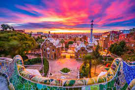
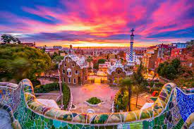

𝐵𝑎𝑟𝑐𝑒𝑙𝑜𝑛𝑒𝑡𝑎 𝐵𝑒𝑎𝑐ℎ 𝑖𝑠 𝑝𝑜𝑝𝑢𝑙𝑎𝑟 𝑤𝑖𝑡ℎ 𝑏𝑜𝑡ℎ 𝑙𝑜𝑐𝑎𝑙𝑠 𝑎𝑛𝑑 𝑡𝑜𝑢𝑟𝑖𝑠𝑡𝑠 𝑏𝑒𝑐𝑎𝑢𝑠𝑒 𝑜𝑓 𝑖𝑡𝑠 𝑐𝑒𝑛𝑡𝑟𝑎𝑙 𝑙𝑜𝑐𝑎𝑡𝑖𝑜𝑛 𝑎𝑛𝑑 𝑒𝑥𝑐𝑒𝑙𝑙𝑒𝑛𝑡 𝑓𝑎𝑐𝑖𝑙𝑖𝑡𝑖𝑒𝑠 𝑖𝑛 𝑡ℎ𝑒 𝐶𝑎𝑡𝑎𝑙𝑜𝑛𝑖𝑎𝑛 𝑐𝑎𝑝𝑖𝑡𝑎𝑙. 𝐽𝑢𝑠𝑡 𝑎 𝑠ℎ𝑜𝑟𝑡 𝑤𝑎𝑙𝑘 𝑓𝑟𝑜𝑚 𝐿𝑎 𝑅𝑎𝑚𝑏𝑙𝑎 𝑎𝑛𝑑 𝑡ℎ𝑒 𝐶ℎ𝑟𝑖𝑠𝑡𝑜𝑝ℎ𝑒𝑟 𝐶𝑜𝑙𝑢𝑚𝑏𝑢𝑠 𝑚𝑜𝑛𝑢𝑚𝑒𝑛𝑡,𝑡ℎ𝑖𝑠 𝑏𝑙𝑖𝑠𝑠𝑓𝑢𝑙 𝑏𝑒𝑎𝑐ℎ 𝑖𝑠 𝑜𝑛𝑒 𝑜𝑓 𝐵𝑎𝑟𝑐𝑒𝑙𝑜𝑛𝑎’𝑠 𝑏𝑒𝑠𝑡 𝑏𝑒𝑎𝑐ℎ𝑒𝑠 𝑓𝑜𝑟 𝑏𝑜𝑡ℎ 𝑤𝑎𝑡𝑒𝑟 𝑠𝑝𝑜𝑟𝑡𝑠 𝑒𝑛𝑡ℎ𝑢𝑠𝑖𝑎𝑠𝑡𝑠 𝑎𝑛𝑑 𝑠𝑢𝑛-𝑠𝑒𝑒𝑘𝑒𝑟𝑠. 𝑆𝑝𝑎𝑖𝑛’𝑠 𝑓𝑜𝑜𝑡𝑏𝑎𝑙𝑙 𝑙𝑒𝑎𝑔𝑢𝑒, 𝐿𝑎 𝐿𝑖𝑔𝑎, 𝑖𝑠 𝑑𝑜𝑚𝑖𝑛𝑎𝑡𝑒𝑑 𝑏𝑦 𝑡𝑤𝑜 𝑝𝑜𝑤𝑒𝑟ℎ𝑜𝑢𝑠𝑒 𝑐𝑙𝑢𝑏𝑠, 𝑅𝑒𝑎𝑙 𝑀𝑎𝑑𝑟𝑖𝑑 𝑎𝑛𝑑 𝐵𝑎𝑟𝑐𝑒𝑙𝑜𝑛𝑎, 𝑤𝑖𝑡ℎ 𝑜𝑡ℎ𝑒𝑟 𝑝𝑜𝑝𝑢𝑙𝑎𝑟 𝑐𝑙𝑢𝑏𝑠 𝑖𝑛𝑐𝑙𝑢𝑑𝑖𝑛𝑔 𝐴𝑡𝑙é𝑡𝑖𝑐𝑜 𝑀𝑎𝑑𝑟𝑖𝑑, 𝑆𝑒𝑣𝑖𝑙𝑙𝑎 𝐹𝐶, 𝑉𝑎𝑙𝑒𝑛𝑐𝑖𝑎 𝐶𝐹, 𝑎𝑛𝑑 𝐴𝑡ℎ𝑙𝑒𝑡𝑖𝑐 𝐵𝑖𝑙𝑏𝑎𝑜 𝑎𝑙𝑠𝑜 𝑝𝑎𝑟𝑡𝑖𝑐𝑖𝑝𝑎𝑡𝑒𝑑 𝑖𝑛 𝑡ℎ𝑒 𝑦𝑒𝑎𝑟𝑙𝑦 𝑡𝑜𝑢𝑟𝑛𝑎𝑚𝑒𝑛𝑡. 𝐹𝑟𝑜𝑚 𝑏𝑎𝑟𝑟𝑒𝑙-𝑎𝑔𝑒𝑑 𝑅𝑖𝑜𝑗𝑎 𝑡𝑜 𝑓𝑜𝑟𝑡𝑖𝑓𝑖𝑒𝑑 𝑠ℎ𝑒𝑟𝑟𝑦, 𝑆𝑝𝑎𝑖𝑛 𝑖𝑠 𝑜𝑛𝑒 𝑜𝑓 𝑡ℎ𝑒 𝑡𝑜𝑝 𝑤𝑖𝑛𝑒-𝑝𝑟𝑜𝑑𝑢𝑐𝑖𝑛𝑔 𝑐𝑜𝑢𝑛𝑡𝑟𝑖𝑒𝑠 𝑖𝑛 𝑡ℎ𝑒 𝑤𝑜𝑟𝑙𝑑. 𝑆 𝑝𝑎𝑖𝑛 𝑖𝑠 𝑎𝑙𝑠𝑜 𝑓𝑎𝑚𝑜𝑢𝑠 𝑓𝑜𝑟 𝑝𝑟𝑜𝑑𝑢𝑐𝑖𝑛𝑔 𝐶𝑎𝑣𝑎, 𝑎 𝑠𝑝𝑎𝑟𝑘𝑙𝑖𝑛𝑔 𝑤𝑖𝑛𝑒 𝑚𝑎𝑑𝑒 𝑖𝑛 𝐶𝑎𝑡𝑎𝑙𝑜𝑛𝑖𝑎 𝑡ℎ𝑎𝑡 𝑖𝑠 𝑙𝑜𝑣𝑒𝑑 𝑓𝑜𝑟 𝑖𝑡𝑠 𝑐𝑟𝑖𝑠𝑝 𝑒𝑓𝑓𝑒𝑟𝑣𝑒𝑠𝑐𝑒𝑛𝑐𝑒 𝑎𝑛𝑑 𝑓𝑜𝑟 𝑏𝑒𝑖𝑛𝑔 𝑓𝑎𝑟 𝑐ℎ𝑒𝑎𝑝𝑒𝑟 𝑡ℎ𝑎𝑛 𝑖𝑡𝑠 𝐹𝑟𝑒𝑛𝑐ℎ 𝑟𝑖𝑣𝑎𝑙, 𝐶ℎ𝑎𝑚𝑝𝑎𝑔𝑛𝑒.